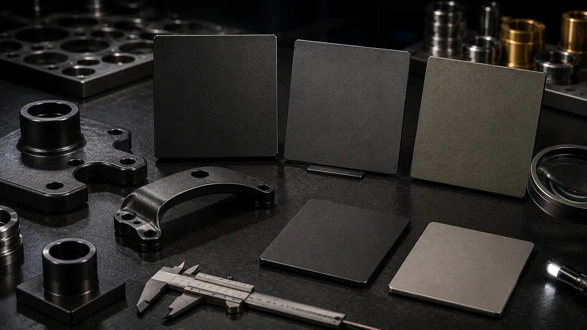

PVD صنعتی و دکوراتیو
برای قطعاتی که ظاهر، فینیش یا معیار عملکرد سطح در تصمیم مهم است.
کاویان کوتینگ (Kavico) ارائهدهنده خدمات پوشش (Coating) و پرداخت سطح برای کاربردهای دکوراتیو و صنعتی است.
تمرکز ما روی انتخاب مسیر مناسب برای همان قطعه است؛ نه فروش یک فرآیند ثابت برای همه پروژهها.
برای قطعاتی که ظاهر، فینیش یا معیار عملکرد سطح در تصمیم مهم است.
برای مسیرهای آبکاری کلاسیک با بررسی زیرکار، خوردگی و کیفیت سطح پیش از اجرا.
برای اصلاح و آمادهکردن سطح پیش از پوشش یا رسیدن به فینیش نهایی.
تناسب فرآیند با جنس قطعه، وضعیت سطح، هدف فینیش و اطلاعاتی که برای برآورد اولیه لازم است.
تطابق دقیق رنگ، عملکرد روی زیرکار خاص و معیارهای دوام؛ این موارد باید با نمونه مرجع یا روش آزمون توافقشده تأیید شوند.

پیش از تحویل، یکنواختی رنگ/فینیش و وضعیت ظاهری بررسی میشود.
براساس جنس قطعه و کاربرد، گزینههای مناسب را شفاف اعلام میکنیم.
از مات تا براق، برای دکوراتیو و صنعتی مسیر مشخص داریم.
زمانبندی پروژه شفاف است و در طول کار گزارش میدهیم.
کاربری، رنگ/فینیش و حساسیت سطح را مشخص میکنیم.
چربیگیری، پولیش/سندبلاست (در صورت نیاز) و کنترل اولیه.
پارامترهای فرآیند برای یکنواختی و دوام کنترل میشوند.
بازبینی نهایی، بستهبندی امن و تحویل مطابق زمانبندی.
اطلاعات ناقص را به عدد قطعی تبدیل نمیکنیم؛ ابتدا ریسکهای قطعه مشخص میشوند.
نتیجه یک نمونه یا عکس را به همه زیرکارها و تیراژها تعمیم نمیدهیم.
معیار ظاهری یا فنی تا حد امکان قبل از تولید روشن میشود.
بخشی از مهندسی سطح، تشخیص محدودیت اطلاعات است. عکس، نمونه و قطعه واقعی هرکدام سطح متفاوتی از اطمینان میدهند و نباید جای هم استفاده شوند.
شکل کلی قطعه، وضعیت ظاهری، نوع فینیش هدف و بعضی ریسکهای قابل مشاهده را میتوان برای غربال اولیه بررسی کرد؛ نه نتیجه نهایی فرآیند را.
وقتی تطابق رنگ، ظاهر لوکس، زیرکار خاص یا سفارش تکراری حساس است، نمونه میتواند فاصله بین انتظار ذهنی و خروجی قابل مشاهده را کمتر کند.
امکانپذیری نهایی، مسیر آمادهسازی و سطح کنترل مناسب به جنس، وضعیت سطح، کاربرد و معیار پذیرش همان پروژه وابسته است.